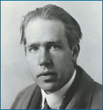

Science is an ongoing endeavor. It did not end with the most recent edition of your college physics textbook and will not end even once we know the answers to big questions, such as how our 20,000 genes interact to build a human being or what dark matter is. So long as there are unexplored and unexplained parts of the natural world, science will continue to investigate them.
Most typically in science, answering one question inspires deeper and more detailed questions for further research. Similarly, coming up with a fruitful idea to explain a previously anomalous observation frequently leads to new expectations and areas of research. So, in a sense, the more we know, the more we know what we don't yet know. As our knowledge expands, so too does our awareness of what we don't yet understand. For example, James Watson and Francis Crick's proposal that DNA takes the form of a double helix helped answer a burning question in biology about the chemical structure of DNA. And while it helped answer one question, it also generated new expectations (e.g., that DNA is copied via base pairing), raised many new questions (e.g., how does DNA store information?), and contributed to whole new fields of research (e.g., genetic engineering). Like Watson and Crick's work, most scientific research generates new expectations, inspires new questions, and leads to new discoveries.
A SCIENCE PROTOTYPE: RUTHERFORD AND THE ATOM
Niels Bohr built upon Ernest Rutherford's work to develop the model of the atom most commonly portrayed in textbooks: a nucleus orbited by electrons at different levels. Despite the new questions it raised (e.g., how do orbiting electrons avoid violating the rules of electricity and magnetism when they don't spiral into the nucleus?), this model was powerful and, with further modification, led to a wide range of accurate predictions and new discoveries: from predicting the outcome of chemical reactions, to determining the composition of distant stars, to conceiving of the atomic bomb.